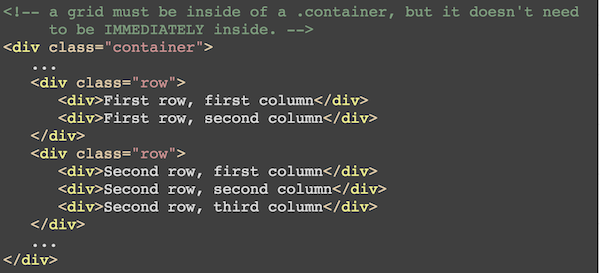
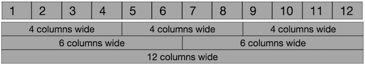

This lab tutorial is designed to give you a quick overview of the Bootstrap CSS framework. Although you've been introduced to this framework before, this lab will re-inforce how you might use Bootstrap in practice (e.g., on future assignments).
Note that this is just a quick tour of the basics of using Bootstrap. As always, for further details and practice you should see the documentation, including the examples.
As part of this tour, you will need to modify the HTML of the webpage you are currently looking at in order to see how to use the framework!
What is Bootstrap?
Bootstrap is the most popular HTML, CSS, and JS framework for developing responsive, mobile first projects on the web.
For us, Bootstrap (also "Twitter Bootstrap", since it was originally developed at Twitter) is a set of pre-defined CSS rules that you can include and use in your web page. You can think of it like "starter code": a set of basic styling rules that you can use to get your page looking decent, before you add in your own CSS customizations. It means you don't have to start your styling from scratch--it can "bootstrap" your work!
To prove that this is not magic, you can look directly at the CSS rules:
https://maxcdn.bootstrapcdn.com/bootstrap/3.3.7/css/bootstrap.css
You'll see the same kinds of CSS (including media queries) that we've been learning! There's just a lot of it provided for you.
Including Bootstrap
You include Bootstrap just like any other CSS file, by adding a <link> element to your header:
<link rel="stylesheet" href="https://maxcdn.bootstrapcdn.com/bootstrap/3.3.7/css/bootstrap.min.css">Note that you usually link to the minified version of the file.
Add this line to the <head> of the page now. Be sure and add it before your own stylesheet so that any rules you define will "override" Bootstrap's (being loaded second).
Reloading the page, you should see the instant effect Bootstrap has: your page now has a nicer font, well-sized headings, highlighted <code> tags, and so-forth. See Typography for more examples and details for how Bootstrap styles basic HTML.
Provided Classes
Beyond the default styling Bootstrap will apply to your HTML, it's most powerful functionality is in a set of class definitions for which the framework provides styling. You can add these classes to your HTML elements in order to quickly alter their appearance in a standardized way
Class names are not magical, they are just the name the Bootstrap developers happened to associate their selectors with in order to apply certain styling rules.
For example, the above "blue info box" is an example of an alert that changes color for elements that match the .alert.alert-info selector. Bootstrap provides a number of these different contextual classes you can use.
For practice:
- Add the
bg-primaryclass to the<header>at the top of the page. You should see that element take on the "default" color. - Add the
page-headerclass as well to improve the spacing. - And to really fix the spacing, make the header a jumbotron instead of having
bg-primary. This will of course remove the "blue" background. - Extra Challenge: If you wanted the header to be white-on-blue, you'd need to modify your own custom CSS. Try declaring a rule that gives
.jumbotronelements the samecolorandbackground-coloras.bg-primaryelements. You can use the Developer Tools to see what rules that class normally specifies.
These classes may often seem redundant with element names, but this is used to specify that you want a Bootstrap-styled element rather than a more basic styling. For example, try adding the class btn to the below button:
(And of course, there are more options you can use as well. Try making the button large and green. What happens if you make the button disabled (via an attribute)?
Class names can often apply to a variety of elements. For example, you can use the same btn and btn-primary classes to make a normal hyperlink look like a button:
Containers
One of the most common classes to include in a Bootstrap-styled document is the .container class. This class makes the specified element have a fixed-width on the screen within a certain range of screen widths—so minor changes to your browser's width won't change the width of the container (e.g., it won't change how many words across each line is). This is exactly what the .container class you used in your Pencil challenge did.
Practice by adding the container class to the <body> of your page so the entire document is added to a fixed-width container. Then try resizing the browser, and notice how the width of the content only changes at a few major "jumps" (between "extra-small", "small", "medium" and "large" widths—these are breakpoints Bootstrap uses for responsive styling).
Note that any content and elements inside the container will exist within the fixed-width area, and so will have the padding along the sides. So because your header is inside the container, the blue jumbotron background doesn't fill the page!
To fix this, you'll need to put contents of the jumbotron inside a container, while leaving the jumbotron itself outside. To do this, try creating a new <div> that is inside the header,but itself contains the content (the <h1> tag). Make this div the container, while the header itself remains styled as a jumbotron! (You'll want to also put the main article content inside a container as well, so the page remains readable).
This is the same thing you were asked to do for your homework assignment. It is a very common pattern: have an "outer" element that has the outside, full-page styling, but then an inner element (like a div) that contains extra styling that applies to the content.
Helper Classes
Bootstrap contains a number of helper classes that can be used for common styling tasks... the kinds of things you did on your Pencil assignment!
For example, look at how you can add a single class to make the below list inline:
- Lions!
- Tigers!
- Bears!
- Oh my!
Bootstrap also makes it easy to "float" elements to one side. For example, add a class to make the last item in the above list float off to the right side of the page.
It's also possible to center text (try it below.
And of course, you can easily use Bootstrap to make content disappear. Can you hide the above paragraph's well?
Bootstrap Forms
Some content structures—like tables or forms use a number of different classes together. These classes are well documented, though you need to carefully look through the examples and explanations to figure out how to use them.
Practice reading this documentation and interpreting the examples by modifying the below form so that it (basically) matches the screenshot in appearance.
divs) for this.Responsive Utilities
Of course, the most significant feature of Bootstrap is how its classes are able to support mobile-first, responsive deisgn and adjust to the size of the screen. This allows pages styled with Bootstrap to function well on mobile phones, tablets, laptops, and desktops.
Bootstrap's rules generally divide devices into 4 different size categories:
- Extra small (
xs), or any device less than768pxacross. Think "mobile phones". - Small (
sm), or devices greater than768pxacross. Think "tablets". - Medium (
md), or devices greater than992pxacross. Think "laptops". - Large (
lg), or devices greater than1200pxacross. Think "desktops".
You can see these sizes at play when the container's fixed-width increases.
Under the hood of course, Bootstrap is just using a bunch of @media queries!
The two letter abbreviations (xs, sm, md, lg) are used by class names to refer to behavior that should apply on that size device. These are used by a number of responsive utility classes. For example, the hidden-xs class indicates that an element should not be shown on an extra-small (<768px) screen.
For practice, trying making a single paragraph (such as this one!) disappear on medium sized devices. Resize the browser to see that it works. Peek-a-boo!
Grids
If responsive classes are the most useful part of Bootstrap, the most useful responsive classes are those that support the Grid System. This system is a set of classes that can be applied in order to arrange content into columns, where the number of columns shown changes on different screen sizes. This is equivalent to what you did with flexbox; the rules and media-queries are just provided for you!
While Bootstrap 3 (the current version) uses floats and width properties to function, the upcoming Bootstrap 4 will actually use flexbox underneath the hood!
Although we've already been over the grid system, we'll review the basics here for you. You should also look at the examples/description in the CSS Frameworks Tutorial, as well as in the Bootstrap documentation.
The basic structure of the grid is like a giant table; elements are arranged into rows (similar to <tr>), each of which includes a number of columns (similar to <td>). You indicate that elements exist within a single row by putting them inside an element (like a div) with the class row:

By default, each "row" has 12 columns of equal width—you can think of it lke having 12 cells in an Excel spreadsheet. You use Bootstrap classes to then specify how many "columns/cells" you want each of your elements to take up—like "merging" columns in a spreadsheet.

Elements can take up as many (whole) columns as you want, and need not add up to the total 12. If your elements take up a total of more than 12 columns, they'll actually "wrap" around to the next line just like a sentence that gets to long for a paper... though they are still part of the same "row".
You specify how many cells the element should take up by giving it a class of the format col-xs-*, where the * is the number of cells you want it to cover. For example, col-xs-1 takes up 1 cell, col-xs-3 takes up 3 cells, and so on.
Practice: in the well below, add Bootstrap classes so that the 5 letters are organized into two rows as indicated. The first row should be divided equally into 3 columns, and the second row should have columns of different widths (your choice!).
But where's the responsiveness? The key here is that .col-xs-4 indicates that the element should span 4 cells on extra-small screens or larger. You can change that middle part (the xs) to use any of the other size classes (sm, md, lg), and the class will then specify how many cells it should span on that size or larger. If a size isn't specified for a particular screen width, the element defaults to taking up all 12 cells.
The "or larger" part following from a mobile-first philosophy—you specify what it looks like on smaller screens, and then expect it to work the same way on larger screens unless you indicate otherwise
Practice: modify your above grid so that the first row has 3 equal-sized columns on medium or larger devices, and that the second row has different column widths on large or larger devices.
The last trick is that we can use multiple column classes to indicate how cell spanning should change as the screen size changes. For example, if an element has the class:
<div class="col-sm-4 col-md-3">That indicates that on small or larger devices it should take up 4 cells, but on medium or larger devices it should only take up 3 cells. Note that the col-md-3 will override the previous specification. For sizes that are unspecified (e.g., xs) the element will default to taking up all 12 cells.
This allows you to specify a "default" size on a smaller device (e.g., xs or sm), as well what the size should change to as things get larger. Just like with our mobile-first media queries!
Note that in the above example, you would not have to include the col-lg-4 class. Because large devices fall under "medium-sized or larger", declaring the size on md devices is sufficient. Only add classes and styles for things that are going to change as the screen gets larger!
Practice: modify the above grid yet again so that in the first row:
- On extra-small screens, each content element takes up the entire screen width (all 12 cells).
- On small or larger screens, each content element takes half the screen. Note that because there are three items and each takes half the screen, one item will end up "below" the others—make sure this item fills the entire screen width.
- On medium or larger screens, each content element takes up equal space, as previously.
Also make the second row change it's sizing on smaller screens, in a manner of your choosing!
And that's the basic idea behind the grid. These responsive sizing classes (e.g., col-sm-3) are used all over Bootstrap, such as for making horizontal forms or specifying table column sizes. The key is to think about "how many of the 12 cells do you want to span", and then specifying that number for any screen size where it changes.
Conclusion
This tour gives you a taste of some of the main components of Bootstrap. There are many other styling classes and options you can use, as well as built-in components (widgets) and even interactive elements using JavaScript, which we will look at in the future.
To learn more, read through the documentation or search for "how to do ______ in Bootstrap".